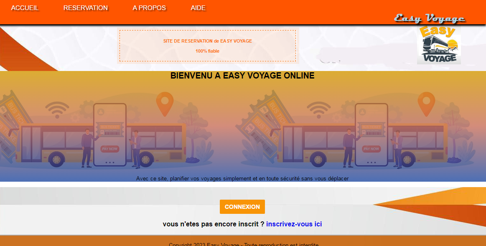

Mes projets
Application de cuisine
Une application android qui aide les cuisiniers à organiser leurs recettes et à découvrir des nouveaux plats.

Plateforme d'une agence de voyage
Un système qui permet aux clients de reserver une ou plusieurs places sur un bus voyageant n'importe où au Cameroun.
Visualisateur d'algorithmes
Un outil interactif pour visualiser et comprendre le fonctionnement des algorithmes de tri et de recherche.